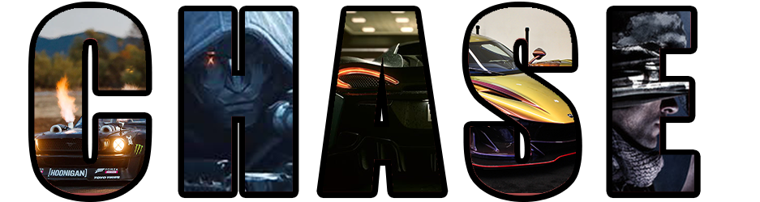

Completed Projects
type of project/what it was done on

type of project/what it was done on
This was made in either either Adobe Photoshop or Illistrator, a visual representation of how we felt that day

This is called the Billy Bob Project, it was a radio commercial that did not go as planned and he kept messing up while talking, and we had to edit it to be cleanly cut and sound professional
This is a simple and easy project, one of my first. It used Photoshop layers to mix images and letters, creating the image you now see
This was done along side my portfolio, teaching us the basics of CSS and HTML, all while makeing a clean and great looking website